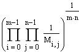
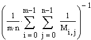

mean(A, B, C, ...) Returns the arithmetic mean, or average,
of A, B, C, ... by summing all elements in the arguments
and dividing by the total number of elements.
median(A, B, C, ...) Returns the median of the elements
in A, B, C, ... , the value above and below which there
are an equal number of values.
gmean(A, B, C, ...) Returns the geometric mean of A,
B, C, ... defined by

hmean(A, B, C, ...) Returns the harmonic mean of A,
B, C, ... defined by

where M is an array created from the function arguments
A, B, C, ...
Arguments:
A, B, C, ... are m x n arrays
or scalars. The arithmetic mean accepts complex and negative values,
while the geometric and harmonic means accepts only positive real numbers.
The median function accepts only real values.
Notes:
If there are an even number of values, the median
is the arithmetic mean of the two central values.
The harmonic mean is the reciprocal of the arithmetic mean of the reciprocals.